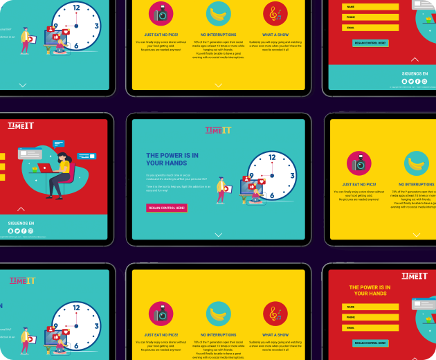

01
Content First
1.1 Elevator Pitch
"Time it" is a time management app, that helps you control the time you spend on social media, so you can regain your life back.
1.2 Audience
This app is for the Y generation who are currently addicted to social media, but, they know they spend to much time on Facebook, Instagram, etc.. and they want to regain power.

1.3 Content
Before I started with the design, I defined the content that will appear on the landing page.